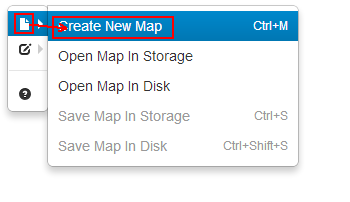
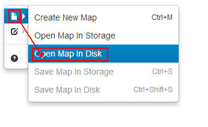
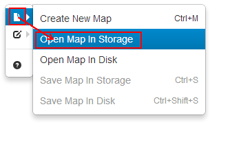
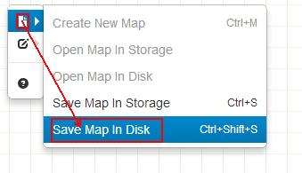
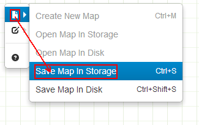
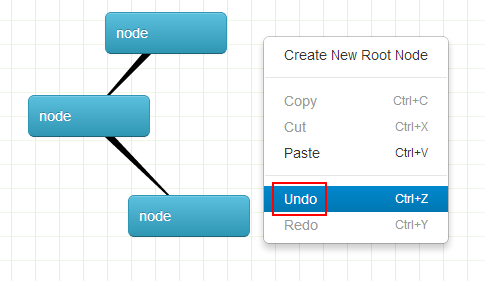
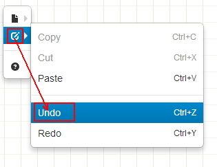
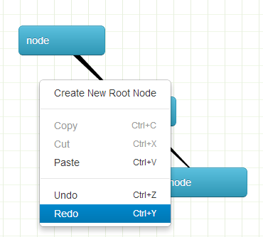
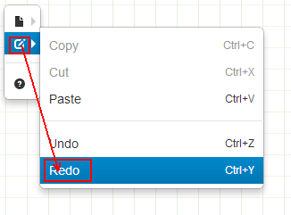
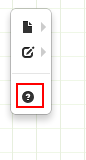

创建新map：file-〉Create New Map 或者使用快捷键[ctrl+m]

打开硬盘中的map：file-〉Open Map In Disk

打开storage中的map：file-〉Open Map In Storage

将map保存到硬盘中：file-〉Save Map In Disk 或者使用快捷键[ctrl+shift+s]

将map保存到storage中：file-〉Save Map In Storage 或者使用快捷键[ctrl+s]

contextMenu: 右键点击map空白处
取消上一步操作：file-〉Undo 或者 contextMenu-〉Undo 或者使用快捷键[ctrl+z]


还原上一步操作：file-〉Redo 或者 contextMenu-〉Redo 或者使用快捷键[ctrl+y]


查看help文档
